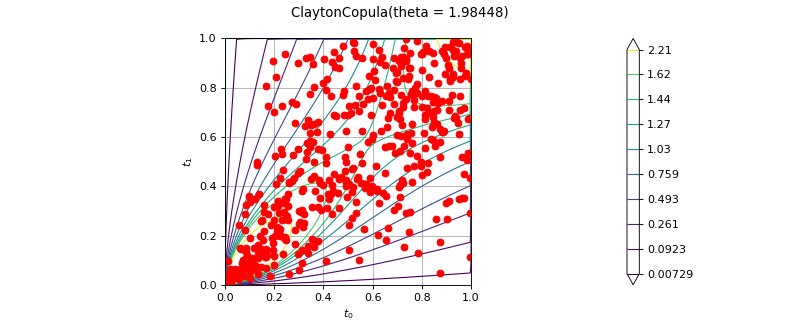

ClaytonCopulaFactory¶
(Source code, png)

- class ClaytonCopulaFactory(*args)¶
Clayton Copula factory.
See also
Notes
We use the following estimator:
![\displaystyle\Hat{\theta}_n=\frac{2\Hat{\tau}_n^{\strut}}{1_{\strut} - \Hat{\tau}_n}]()
Methods
build(*args)Build the distribution.
buildAsClaytonCopula(*args)Estimate the copula as native copula.
buildEstimator(*args)Build the distribution and the parameter distribution.
Accessor to the bootstrap size.
Accessor to the object's name.
getName()Accessor to the object's name.
hasName()Test if the object is named.
setBootstrapSize(bootstrapSize)Accessor to the bootstrap size.
setName(name)Accessor to the object's name.
- __init__(*args)¶
- build(*args)¶
Build the distribution.
Available usages:
build()
build(sample)
build(param)
- Parameters:
- sample2-d sequence of float
Data.
- paramsequence of float
The parameters of the distribution.
- Returns:
- dist
Distribution The estimated distribution.
In the first usage, the default native distribution is built.
- dist
- buildAsClaytonCopula(*args)¶
Estimate the copula as native copula.
Available usages:
buildAsClaytonCopula()
buildAsClaytonCopula(sample)
buildAsClaytonCopula(param)
- Parameters:
- sample2-d sequence of float
Data of dimension 2.
- paramsequence of float of size 1
The parameter
![\theta]() .
.
- Returns:
- copula
ClaytonCopula The estimated copula as a Clayton copula.
In the first usage, the default Clayton copula is built.
- copula
- buildEstimator(*args)¶
Build the distribution and the parameter distribution.
- Parameters:
- sample2-d sequence of float
Data.
- parameters
DistributionParameters Optional, the parametrization.
- Returns:
- resDist
DistributionFactoryResult The results.
- resDist
Notes
According to the way the native parameters of the distribution are estimated, the parameters distribution differs:
Moments method: the asymptotic parameters distribution is normal and estimated by Bootstrap on the initial data;
Maximum likelihood method with a regular model: the asymptotic parameters distribution is normal and its covariance matrix is the inverse Fisher information matrix;
Other methods: the asymptotic parameters distribution is estimated by Bootstrap on the initial data and kernel fitting (see
KernelSmoothing).
If another set of parameters is specified, the native parameters distribution is first estimated and the new distribution is determined from it:
if the native parameters distribution is normal and the transformation regular at the estimated parameters values: the asymptotic parameters distribution is normal and its covariance matrix determined from the inverse Fisher information matrix of the native parameters and the transformation;
in the other cases, the asymptotic parameters distribution is estimated by Bootstrap on the initial data and kernel fitting.
- getBootstrapSize()¶
Accessor to the bootstrap size.
- Returns:
- sizeinteger
Size of the bootstrap.
- getClassName()¶
Accessor to the object’s name.
- Returns:
- class_namestr
The object class name (object.__class__.__name__).
- getName()¶
Accessor to the object’s name.
- Returns:
- namestr
The name of the object.
- hasName()¶
Test if the object is named.
- Returns:
- hasNamebool
True if the name is not empty.
- setBootstrapSize(bootstrapSize)¶
Accessor to the bootstrap size.
- Parameters:
- sizeinteger
The size of the bootstrap.
- setName(name)¶
Accessor to the object’s name.
- Parameters:
- namestr
The name of the object.

{kind=link}